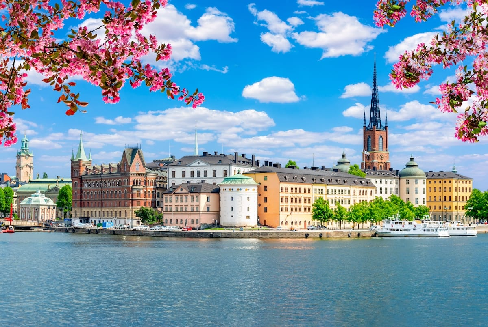
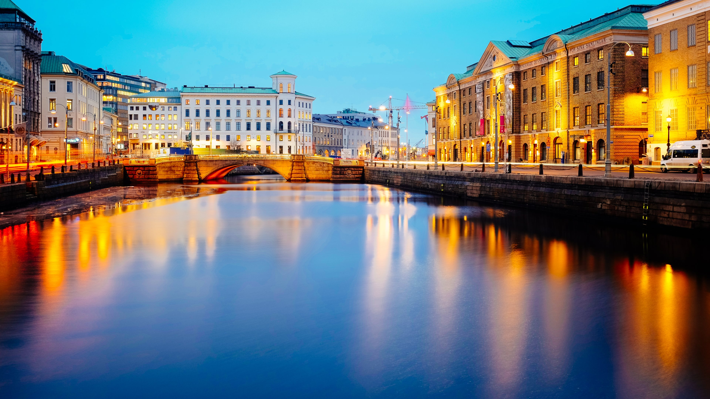
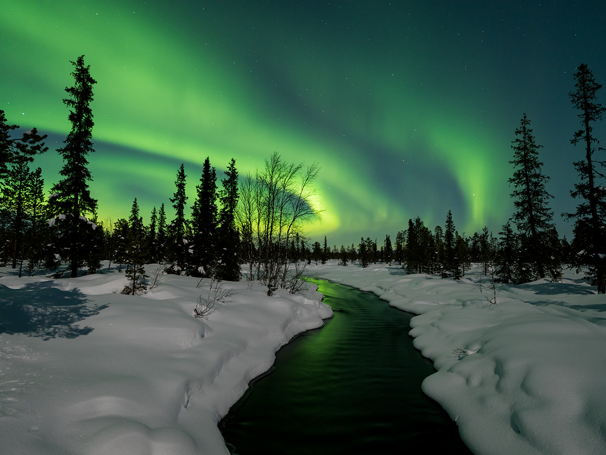
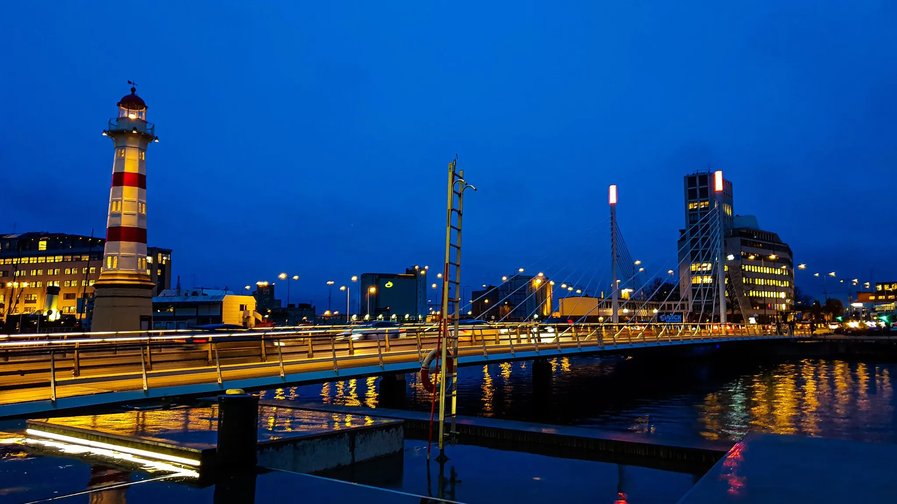

Sweden is a land of stunning nature, peaceful forests, and modern cities. From the northern lights to beautiful lakes and islands, it offers a unique mix of adventure and relaxation.
← Back to Home
Stockholm is Sweden’s capital, built on islands connected by bridges. Explore Gamla Stan, royal palaces, and modern Scandinavian design.

Gothenburg is known for its canals, seafood, and relaxed atmosphere. Visit Liseberg amusement park and enjoy the coastal charm.

Swedish Lapland offers magical winter experiences like the Northern Lights, dog sledding, and snowy landscapes.

Malmö is a vibrant coastal city with modern architecture and beautiful parks. It’s connected to Copenhagen by the famous Öresund Bridge.